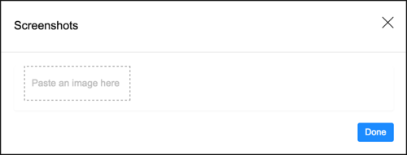
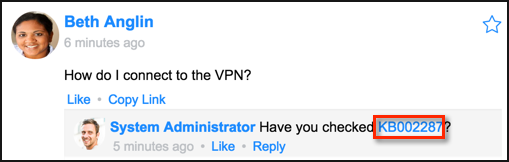
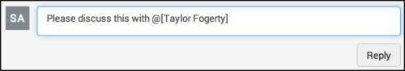

Posting Content in Live Feed
Contents
1 Overview
In live feed, you can post new messages and replies to existing messages for all users in the feed. You can also send a reply message to a team or record.
| |
Note: Many of these features are part of live feed v2, which is available starting with the Fuji release. If you are using live feed v1, or have not activated live feed v2, see Legacy Live Feed. |
2 Posting Messages
Post a message to open a new feed. To participate in an existing feed, see Replying to Messages.
To post a new message:
- Navigate to Social IT > Live Feed.
- Click the feed to which you want to post your message, for example My Live Feed, Company Feed, and so on.
- Enter a message in the Share your thoughts field. Use hashtags, if you want.
- As needed, click , , or to add a poll, attachment, or screenshot image, respectively.
- Click Post.
{kind=link}
{kind=link}
{kind=link}
3 Replying to Messages
To participate in an existing thread of a feed, you can compose and submit a reply message. By default, the message is visible to all members of the feed.
To reply to a message or another reply:
- Navigate to Social IT > Live Feed.
- Locate the message you want to reply to.
- Type your reply in the message box and click Reply.
- As needed, you can add hashtags, attachments, links, or knowledge base articles.
- To limit who can view the reply to a single individual, select a user from the To choice list.
- Click Reply.
- By default, 7 replies are visible for each message. To view additional replies, click Show all replies. Any reply to a reply includes a Threads link (starting with the Fuji release).
- Click Threads to view all of the replies within the selected reply in reverse chronological order within the Message Thread pop-up window, similar to an email thread.
{kind=link}
4 Attaching Files, Links, Images, and Knowledge Articles to Messages
In addition to entering text, you can attach files, such as images, documents, and spreadsheet files in any ServiceNow supported file type to live feed messages. Administrators can manage attachment file settings, such as supported file types and maximum attachment file size, by editing system properties.
You can also include links to user-defined URLs and knowledge articles contained in your instance's knowledge base.
| |
Note: The functionality described here applies to HTML5-compliant browsers, such as Chrome, Firefox, Safari and Internet Explorer 10 and above. Significant differences while using different browsers are highlighted. |
4.1 Attaching a File to a Post or Reply
There are two methods that can be used to attach files to posts, drag-and-drop and using the paperclip icon (). Additionally, you can paste images into a post or reply from the clipboard.
To attach a file to a post or reply:
- Do one of the following:
- While composing a post or reply (see Posting Messages or Replying to Messages), locate one or more images or other supported types of files, and drag them into the message box.
- Click the paperclip icon () in the message box, navigate to the location of the files you want to attach, select them, and click Open.
- To add more files, drag-and-drop additional files into the text box below the displayed files or images, or click the plus sign.
- If you want to delete an attachment before posting the message, click the trashcan icon adjacent to the attachment.
- When you have finished entering your message, click Post or Reply.
- If you added files that do not contain previews and then posted the message, they will be listed in the message box with a Download link.
- Click the link to download the files.
{kind=link}
4.1.1 Copying Images from the Clipboard
In addition to adding files to a message, you can also copy images to the clipboard and paste them into a message or reply.
To add an image to a post or reply:
- Click into the Comment box and add a comment.
- Click the Add an image button.
- The Screenshots dialog box opens.
- 
- Right-click the Paste an image here box and select Paste to paste the image from the clipboard.
- To add another image, repeat the previous steps.
- When you finish pasting images into the message, click Done.
- To change the link text, click Pasted Image and enter a new label.
- When you finish, click Post or Reply.
- To remove an image, click the trash can icon adjacent to the link.
- To make changes to an existing image, click the edit icon (pencil).
{kind=link}
{kind=link}
{kind=link}
| |
Note: The copy/paste functionality is supported in Chrome, Firefox, and Internet Explorer 11. |
4.2 Adding a Link to a Post or Reply
To add a link to a post or reply:
- Click into the Comment box. The Add a link button appears.
- Click the Add a link button. The URL and Link text fields appear.
- Enter the URL and the text you want to appear as the link.
- To add another link, click the link icon under the URL field.
- When you have finished entering your message, click Post or Reply.
{kind=link}
{kind=link}
{kind=link}
| |
Note: To remove a link, click the trash can icon adjacent to the link. To make changes to an existing link, click the edit (pencil) icon. |
4.3 Adding a Knowledge Article Link to a Post or Reply
To add a link to a knowledge article to a post or reply:
- While composing a post or reply, type the ID of the knowledge article you want to link to. It is not necessary to identify the knowledge article ID as a hyperlink; live feed recognizes it as such and automatically converts it into a link when the message is posted.
- When you are finished entering your message, click Post or Reply.
- .
{kind=link}
5 Adding a Poll to a Message
When you are posting a message, you have the option of creating a poll in order to record your viewers' opinions. As users take the poll, their feedback statistics are displayed within the feed.
To create a poll:
- Open the feed where you want to create a message with a poll.
- Enter the message with an invitation to take the poll in the Share your thoughts box.
- Click the poll () icon.
- In the Question field, enter the question on which you are soliciting opinions.
- In the Option fields, enter possible responses to the query.
- To add more response options, click Add more options.
- Click Post.
{kind=link}
After the poll is posted, users who view the message can vote. After they vote, their pictures appear next to their response, with others who have voted for the same option.
| |
Note: Only the poll creator can view results without casting a vote. Other members can see results only after casting a vote or if the poll is closed. |
To close a poll to additional votes, click the down-arrow and select Close Poll.
{kind=link}
An email notification with the poll result is sent to all participants of the poll informing them that the poll is closed.
6 Adding @mentions to Messages
An @mention is any posted update that contains @username anywhere in the body of the message. The user's name, with a link to that user's feed, is inserted into the message. Additionally, the mentioned user receives an email notification about the mention. This is a great way of bringing attention to other members in a conversation. All @mentions are included in the logged-in user's My Feed.
| |
Note: If an @mention is used by a member of a team, only members of that team appear in the auto-suggest list. |
To add an @mention:
- While entering a message or reply in a conversation, type @username anywhere in the message. As you type, an auto-suggest list appears with names and pictures of users that match your entries. For example, if you type @t, the auto-suggest list shows the pictures and names of all users with names that start with T.
- Click the user you want to add.
- That user's name is inserted into the @mention in the body of the message.
- 
{kind=link}
{kind=link}
| |
Note: My Live Feeds display @mentions of you and the teams you are a member of. Profile feeds for another user display only @mentions of that user. |
7 Liking Messages
To like a message:
- Navigate to Social IT > Live Feed.
- Click Feeds.
- Locate the feed that contains the message you want to like.
- Under the message title, click Like.
- If the message has previously been liked, the number of likes for a message displays next to the Like link.
- For a top-level message, the profile pictures of the first 5 users who liked a message are displayed. Any additional users who liked the message can be viewed by hovering over the # more link. If the logged-in user has liked the message, that user's image will appear first, followed by the image of the user who last liked the message.
- For a reply, you must hover your mouse pointer over the count link to view the users who liked the message.
| |
Note: After a message has been liked, it cannot be unliked. |
8 Deleting Messages
Users can delete any of their own posts or replies. A conversation administrator can also delete messages.
To delete a message:
- Hover over the message you want to delete.
- Click the trash can icon in the upper-right-hand corner of the message box.
- Click Delete in the confirmation box.
- The message disappears from the feed.